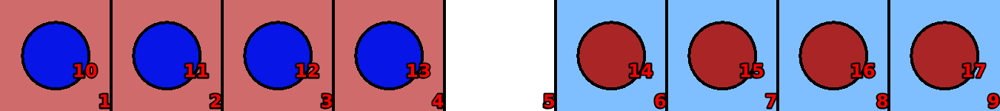
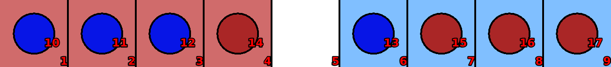
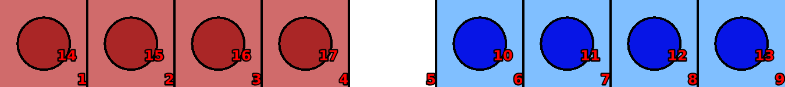

8-men-on-a-raft
Language: Teaching Script Entire Dialog
World states:
init-8men.world
second-8men.world
final-8men.world
Primitive concepts used
Object types:
|
locations, blocks |
Colors:
|
red, blue
|
| Spatial relations: |
on, below, between |
| Functions: |
count of, less than |
Teaching Dialog (Rosie in bold)
TEACHER: The name of the puzzle is eight-men-raft.
Please setup the puzzle.
TEACHER: Load init-8men.

Ok.
TEACHER: Ok.
Please describe the actions, goals, and failure conditions.
TEACHER: If a clear location is to the right of a blue peg then you can move the peg onto the location.
Please describe the meaning of 'clear' in this context.
TEACHER: If a location is not below an object then it is clear.
Ok, I've learned the meaning of 'clear' for this context.
Please describe the meaning of 'peg' in this context.
TEACHER: If an object is a block then it is a peg.
Ok, I've learned the meaning of 'peg' for this context.
I've learned the action.
TEACHER: If a clear location is to the left of a red peg then you can move the peg onto the location.
I've learned the action.
TEACHER: Load second-8men.

Ok.
TEACHER: If a red peg is to the right of a peg and the peg is to the right of a clear location then you can move the red peg onto the clear location.
I've learned the action.
TEACHER: If a blue peg is to the left of a peg and the peg is to the left of a clear location then you can move the blue peg onto the clear location.
I've learned the action.
TEACHER: The solution has twenty-four steps.
Ok.
TEACHER: Load final-8men.

Ok.
TEACHER: The name of the goal is red-blue-matched.
Please setup the goal state.
TEACHER: Ok.
Please describe the goal.
TEACHER: The goal is that all the red blocks are on the red locations and all the blue blocks are on the blue locations.
I've learned the goal.
TEACHER: Done.
I've learned eight-men-raft. Should I try to solve the puzzle?
TEACHER: No.
Ok.